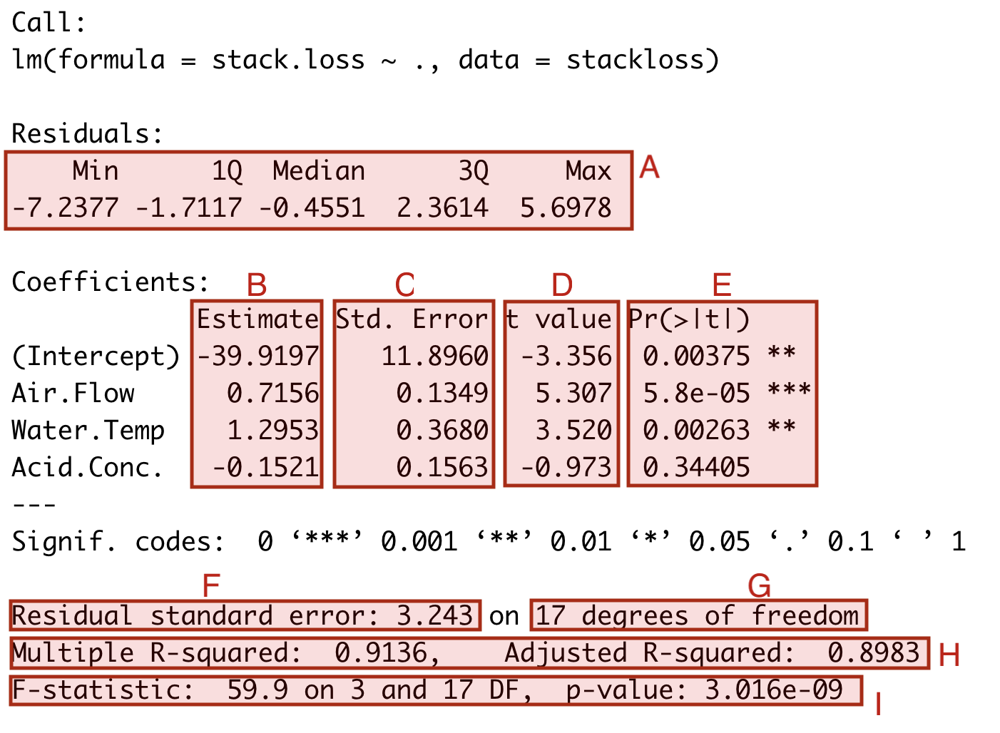

Interlude: Understanding the lm() Output
We have seen that the lm() function returns an object which contains
a lot of information about the fitted model. We can inspect this
information by using the summary() function. The aim of this section
is to help you understand how the output of summary() relates to the
mathematical expressions we have considered in the previous sections.
We will use the stackloss dataset as an example:
m <- lm(stack.loss ~ ., data = stackloss)
summary(m)
Here I have marked different parts of the output using red shaded boxes and using the letters A to I. We discuss each of the marked sections in turn:
The first section, part A, contains summary statistics for the fitted residuals \(\hat\varepsilon_1, \ldots, \hat\varepsilon_n\). The values shown are the minimum, first quartile, median, third quartile, and maximum of the residuals. This is the same information we can get using the command
summary(resid(m)). The mean is omitted from A, since if always equals zero.Column B shows the estimated coefficient vector \(\hat\beta\). This is computed using the formula from lemma 2.1.
Column C shows the standard error of the estimated coefficients. The \(i\)th entry is the (estimated) standard deviation of \(\hat\beta_i\), computed as \(\sqrt{\hat\sigma^2 C_{ii}}\), where \(C = (X^\top X)^{-1}\). This corresponds to the variance shown in equation (4.2), where the true variance is \(\sigma^2\) replaced with the estimate \(\hat\sigma^2\). These quantities are used to compute the t-test statistic in equation (5.2).
Column D shows the t-test statistic for the coefficients. The values are computed using equation (5.2).
Column E replicates the information from column D in different form, showing \(p\)-values instead of the test statistics.
The field F shows the estimated standard deviation \(\hat\sigma\). This is computed as the square root of \(\hat\sigma^2\) from equation (4.6).
Field G shows the value \(n - p - 1\). This is the number of degrees of freedom in lemma 5.2. The value is needed when performing hypothesis tests and computing confidence intervals for individual coefficients.
Field H shows the \(R^2\) value and adjusted \(R^2\) value. These are computed using definitions 8.1 and 8.2.
Field I shows the \(F\)-test statistic for testing the hypothesis \(H_i\colon \beta_1 = \cdots = \beta_p = 0\) (omitting the coeficient \(\beta_0\) for the intercept). This value can be used to test the hypothesis that the inputs have no effect on the output. The \(F\)-test statistic is computed using equation (6.1), the degrees of freedom shown are \(k = p\) and \(n - p - 1\) from lemma 6.1.